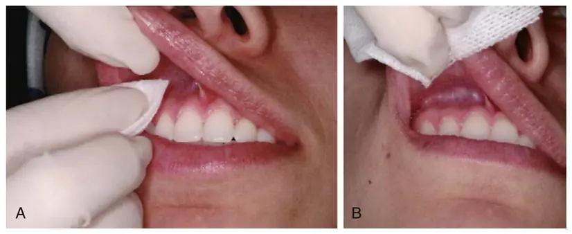
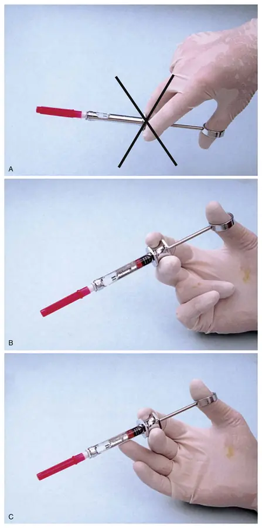

نسخه استخراجشده؛ ترجمه یا تأیید علمی انجام نشده است. وضعیت: captured
پیش از بلاک عصب آلوئولار تحتانی (IANB)، دستیار با یک پنبهی آغشته بیحسی سطحی را روی بیشتر مخاط سمت چپ و تا نزدیک حلق مالیده است. بیمار از طعم تلخ و حس سنگینی در گلو شکایت دارد. کجای کار ایراد دارد؟

بیحسی سطحی فقط ۲ تا ۳ میلیمتر بیرونی مخاط را بیحس میکند؛ همان لایهی حساسی که ورود سوزن را حس میکند. بافت عمقیتر بیحس نمیشود.
مصرف زیاد روی سطح وسیع سه ایراد دارد: بیحسی ناخواستهی کام نرم و حلق، طعم ناخوشایند، و جذب سریع برخی داروها مانند لیدوکائین به گردش خون که خطر مسمومیت را بالا میبرد. اسپریهایی که دوز سنجیده نمیدهند، مقدار دارو را کنترل نمیکنند و برای دهان مناسب نیستند.
نکتهی طلایی: بیحسی سطحی درست، بافت کشیده و تکیهگاه محکم، ورود اولیهی سوزن را تقریباً همیشه بیآنکه بیمار بفهمد ممکن میکنند. روشهای حواسپرتی مانند لرزاندن لب لازم نیستند، و در کشیدن لب روی سوزن، نوک سوزن را دیگر نمیبینی.
